ふりーむ！の掲示板で、
4-12がわからない方がいらっしゃったので、攻略してみたいと思います。
| 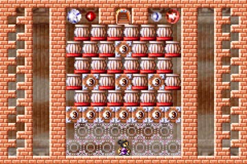 | ４−１２ 白黒共通 えー、マップにアクセントをつけるために が、この面の場合、ボスの部屋へ行くまで、 ちなみにこの面の場合、白主人公も、黒主人公も、 |
| 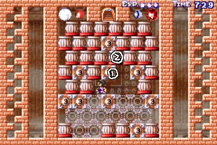 | まず、適当にブロックを消しながら、 このような状態を作ってみます。 気をつける点は、ブロックを消したときに、 その後”１”のブロックを消すのですが、 |
*Ａ 安全なブロックの消し方
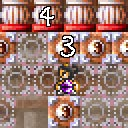 |
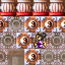 |
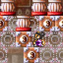 |
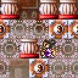 |
| ”３”のブロックを 消したいですが そのままでは”４”の柱に つぶされてしまいます。 |
なので、目の前に 保険のブロックを 出現させてみました。 |
上斬りで、”３”の ブロックを消しました。 ”４”の柱は、 目の前のブロックに つっかえています。 |
目の前のブロックを 消します。 当然つぶされることは ありません。 |
*Ｂ しゃがみ振り向き
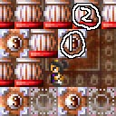 |
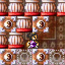 |
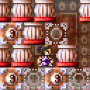 |
| まず、左側の壁に、 ぴったりくっつきます。 |
しゃがみ振り向きで、 右側を向きます。 |
上斬りで、”１”のブロックを 消してください。 |
| 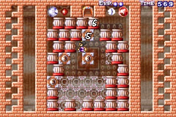 | その後、適当にブロックを消しつつ、 ここまで上ってきてください。 下に落ちた柱は、邪魔にならないように ”５”のブロックは、しゃがみ振り向きを |
| 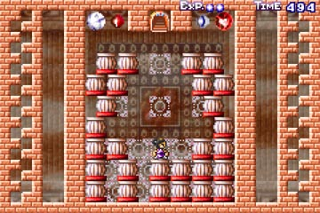 | 完成図です。 アイテムをとるときは、 やはりこの面は難しいですね。 |